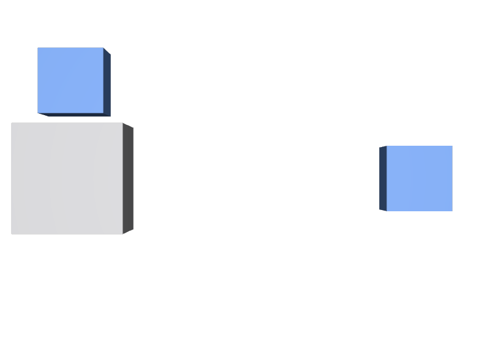

部品だけ欲しいので中を名指しする
その部品だけが本当に再利用の単位なら、それを独立したファイルにして入口を与えます。既存アセットの内部を指すのは、あとで必ず壊れます。
STEP 56 · COMPOSITION
アセットの中身へ、外から手を伸ばさないようにします
今日これだけ
公式情報に基づく説明
あるファイルをReferenceで持ち込むと、そのファイルの内側に書かれたComposition Arcは、そのファイルの中で完結した形で一緒に運ばれてきます。外側から中の記述の仕組みを気にする必要はありません。この性質をEncapsulationと呼びます。逆に、アセットの途中のPathを名指しして参照すると、その部品より上にあった構造や変換は付いてきません。
USDA
#usda 1.0
(
defaultPrim = "Chair"
metersPerUnit = 1
upAxis = "Y"
)
def Xform "Chair" (
kind = "component"
)
{
def Cube "Seat"
{
double size = 1
color3f[] primvars:displayColor = [(0.62, 0.62, 0.64)]
}
def "Fastener" (
references = @encap-bolt.usda@
)
{
double3 xformOp:translate = (0, 0.9, 0)
uniform token[] xformOpOrder = ["xformOp:translate"]
}
}Chairが入口です。defaultPrimで指定してあり、kind = "component"で「再利用の単位はここ」と示しています。内側のFastenerは、さらに別のファイルを参照しています。この内側のReferenceはChairの中に閉じており、使う側が意識する必要はありません。
USDA
def Xform "World"
{
def "GoodUse" (
references = @encap-chair.usda@
)
{
double3 xformOp:translate = (-1.6, 0, 0)
uniform token[] xformOpOrder = ["xformOp:translate"]
}
def "ReachesInside" (
references = @encap-chair.usda@</Chair/Fastener>
)
{
double3 xformOp:translate = (1.6, 0, 0)
uniform token[] xformOpOrder = ["xformOp:translate"]
}
}GoodUseはファイル名だけを書いており、defaultPrimであるChairが入口になります。ReachesInsideはファイル名の後ろに</Chair/Fastener>と書き、内部の部品を名指ししています。文法としては通りますが、結果が変わります。
結果

GoodUseには座面と、上へ持ち上がった留め具の両方があります。右のReachesInsideは留め具だけで、座面も、留め具を持ち上げていたtranslateも付いてきていません。examples/lesson-31/encap-scene.usda / Apple USD Tools 0.25.2 のusdrecord（Hydra Storm・Metal）/ macOS 26.5.2・Apple M4['/World',
'/World/GoodUse', '/World/GoodUse/Seat',
'/World/GoodUse/Fastener', '/World/GoodUse/Fastener/Head',
'/World/ReachesInside', '/World/ReachesInside/Head',
'/World/ShotCam']GoodUseの下にはSeatとFastenerが両方あります。ReachesInsideの下にはHeadしかありません。名指ししたFastenerより上の階層は、まるごと失われています。
Diagram
Python
from pxr import Sdf, Usd, UsdGeom
# 参照する前に、そのファイルの入口を確認する
layer = Sdf.Layer.FindOrOpen("encap-chair.usda")
print(layer.defaultPrim) # Chair
stage = Usd.Stage.CreateNew("scene.usda")
UsdGeom.Xform.Define(stage, "/World")
good = stage.DefinePrim("/World/GoodUse")
good.GetReferences().AddReference("encap-chair.usda") # Pathを書かない
stage.Save()AddReferenceの第2引数を省くと、相手のdefaultPrimが入口になります。Sdf.LayerからdefaultPrimを読めば、参照する前に入口の名前を確認できます。入口が設定されていないファイルは、そもそも「外から使う想定になっていない」と考えたほうが安全です。
USDA → Python mapping
USDA
references = @encap-chair.usda@↓Python
prim.GetReferences().AddReference("encap-chair.usda")USDA
references = @encap-chair.usda@</Chair/Fastener>↓Python
AddReference("encap-chair.usda", "/Chair/Fastener")USDA
defaultPrim = "Chair"↓Python
layer.defaultPrimBeginner notes
よくある間違い
その部品だけが本当に再利用の単位なら、それを独立したファイルにして入口を与えます。既存アセットの内部を指すのは、あとで必ず壊れます。
中を名指しすると、その部品より上にあったxformOpが付いてきません。位置がずれるのは仕様どおりの結果です。
入口が無いと、使う側はPathを名指しするしかなくなります。配布するファイルには必ずdefaultPrimを書きます。
内側のArcは持ち込まれた側に閉じています。外から変えたいなら、アセット側が変更点を公開する必要があります。
Glossary
defaultPrim。defaultPrimなどを読める。Official references
確認日: